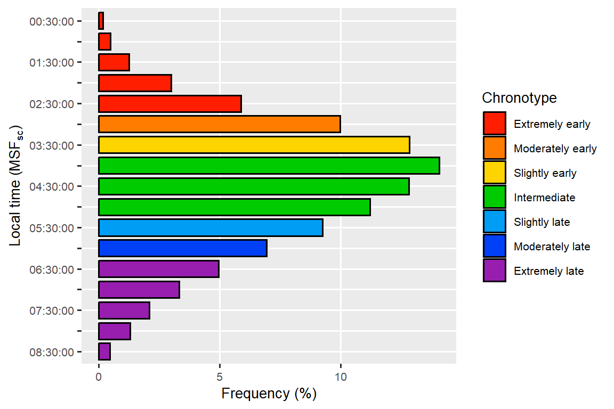
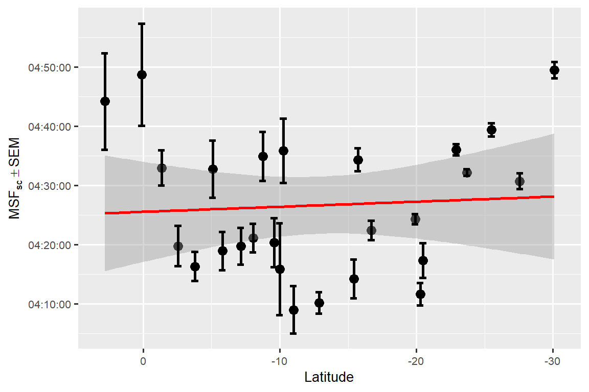

6 A biological approach for the latitudinal cline of the chronotype
You are reading the work-in-progress of this thesis. This chapter should be readable but is currently undergoing final polishing.
The results shown here are preliminary, so please take them with a grain of salt.
The data has not yet been fully cleaned, balanced, and cross-referenced with the secondary databases. Think of these results as a low-resolution preview of the final results. The step-by-step analysis can be seen in the appendices section.
Target
The following study was performed by Daniel Vartanian (DV), Mario Pedrazzoli (MP) and Camilo Rodrigues Neto (CR).
DV contributed to the design and implementation of the study. DV and MP collected the data. DV and CR performed the statistical analysis. DV wrote the manuscript. All authors discussed the results and revised the final manuscript. –>
Future reference: Vartanian, D., Pedrazzoli, M., & Rodrigues Neto, C. (2024). A biological approach for the latitudinal cline of the chronotype. Scientific Reports.
Chronotypes are temporal phenotypes (Ehret 1974; C. S. Pittendrigh 1993). Observable traits, like weight and eye color. Our current understanding of these traits is that they are linked to our environment and are the result of evolution pressures for creating an inner temporal organization (Aschoff 1989; Paranjpe and Sharma 2005). A way that organisms have found to anticipate events. Having such an important function in nature, these internal rhythms need to be closely aligned with environmental changes. The agents that shift these oscillations towards the environment are called zeitgebers and the shift phenomenon is called entrainment (Roenneberg, Daan, and Merrow 2003; Roenneberg et al. 2010). The main zeitgeber for humans is light exposure, particularly the light of the sun (Khalsa et al. 2003; Minors, Waterhouse, and Wirz-Justice 1991; Roenneberg et al. 2007). Considering the major role of light on entrainment, several studies hypothesized that the latitude shift of the sun could influence or even define the chronotypes of different populations (Horzum et al. 2015; Hut et al. 2013; Leocadio-Miguel et al. 2017, 2014; Colin S. Pittendrigh, Kyner, and Takamura 1991; Randler and Rahafar 2017). For example, populations that live close to the equator would be, on average, more entrained to the light-dark cycle and have morning-leaning characteristics. Here we test this hypothesis using a biological measure, the chronotype state, provided by the Munich ChronoType Questionnaire (Roenneberg, Wirz-Justice, and Merrow 2003). We tested the latitude hypothesis on a sample with \(73,825\) subjects living in different latitudes in Brazil. Our results show that, even with a wide, big, and aligned sample, the latitude is associated only with negligible effect sizes. The entrainment phenomenon appears to be much more complex than previously imagined, opening new questions and contradictions that need to be further investigated.
6.1 Main text
6.1.1 Introduction
Humans can differ from one another in many ways. These observable traits, like hair color or height, are called phenotypes and are also presented in the way that our body functions.
A chronotype is a temporal phenotype (Ehret 1974; C. S. Pittendrigh 1993). This word is usually used to refer to endogenous circadian rhythms, i.e., rhythms which periods that are close to a day or 24 hours (circa diem). The current body of knowledge of Chronobiology, the science that studies biological rhythms, indicates that the evolution of these internal oscillators is linked to our oscillatory environment, like the day and night cycle, which, along with our evolution, created environmental pressures for the development of a temporal organization (Aschoff 1989; Paranjpe and Sharma 2005). A way in which an organism could predict events and better manage its needs, like storing food for the winter.
But a temporal system wouldn’t be of much use if it could not follow environmental changes. To those environmental signals that can regulate the biological rhythms are given the name zeitgeber (from the German Zeit, time, and Geber, giver). These zeitgebers produce inputs in our bodies that can shift and align those rhythms. This phenomenon is called entrainment (Roenneberg, Daan, and Merrow 2003; Roenneberg et al. 2010).
The main zeitgeber known today is the light, particularly the sun’s light (Khalsa et al. 2003; Minors, Waterhouse, and Wirz-Justice 1991; Roenneberg et al. 2007). Considering its influence in entraining the biological temporal system, several studies hypothesize that the latitudinal shift of the sun, related to the earth’s axis, would produce, on average, different temporal traits in populations that live close to the equator line when compared to populations that live close to the planet’s poles (Horzum et al. 2015; Hut et al. 2013; Leocadio-Miguel et al. 2017, 2014; Colin S. Pittendrigh, Kyner, and Takamura 1991; Randler and Rahafar 2017). That is because the latter ones would have greater oscillations in sun activity and an overall weak solar zeitgeber. This is the latitude hypothesis, that can also appear as an environmental hypothesis of circadian rhythm regulation.
Recently there have been attempts to test the latitude hypothesis in different settings, but, at least in humans, none of them have been successful in seeing a significant effect size related to the latitudinal cline. Some of these approaches worked with secondary data and with small samples. One of the most serious attempts of testing this hypothesis was made by Leocadio-Miguel et al. (2017) in 2017. They measured the chronotype of \(12,884\) Brazillian subjects on a wide latitudinal spectrum using the Morningness–Eveningness Questionnaire (MEQ). Their results showed a negligible effect size. One possible reason for this is that the MEQ measures psychological traits and not biological states (Roenneberg, Winnebeck, and Klerman 2019), i.e., the circadian oscillation itself, therefore, it’s not the best way to answer the question (Leocadio-Miguel et al. 2014).
This article brings a novel attempt to test the latitude hypothesis, using, this time, a biological approach provided by the Munich ChronoType Questionnaire (MCTQ) (Roenneberg, Wirz-Justice, and Merrow 2003). Furthermore, the test was carried out on the biggest chronotype sample ever collected in a same country. A sample made of \(73,825\) subjects, all living in the same timezone in Brazil, with only one week of difference between questionnaire responses.
6.1.2 Results
The midpoint between sleep onset and sleep end on work-free days (\(\text{MSF}_{\text{sc}}\)), MCTQ proxy for measuring the chronotype, had an overall mean of \(\text{04:26:51}\). The distribution curve is shown in Figure 6.1.
That’s the midsleep point of Brazilian subjects with an intermediate/average chronotype. One can imagine, following the 7-9h sleep recommendation for healthy adults of the American Academy of Sleep Medicine (AASM) (Watson et al. 2015), that this average person would, if he/she had no social obligations, typically wake up at about \(\text{08:26:51}\).
Code

The \(\text{MSF}_{\text{sc}}\) curve had a skewness of \(0.291\) and a kurtosis of \(2.766\). However, the distribution was not normal accordingly to Kolmogorov-Smirnov test (\(\text{D} = 0.0373\); \(\text{p-value} < 2e-16\)) and D’Agostino Skewness test (\(\text{Z3} = 31.544\); \(\text{p-value} < 2.2e-16\)).
A linear regression model was created with \(\text{MSF}_{\text{sc}}\) as the response variable and with age and sex as predictors (\(\text{R}^{2} = 0.054433\); \(\text{F}(2, 73822) = 2130\), \(\text{p-value} < 2e-16\)). A Box-Cox transformation of the response variable was needed to attend to the linear regression model assumptions (\(\lambda = -1.1919\); \(\text{MSF}_{\text{sc}}^{\lambda - 1} / \lambda\)). All coefficients were significantly different than \(0\) (\(\text{p-value} < 2e-16\)) and, accordingly to D’Agostino Skewness test, the residuals were normal (\(\text{Z3} = -1.2704\); \(\text{p-value} < 0.2039\)). Residual homoscedasticity was verified by a Score Test for Heteroskedasticity (\(\chi^{2} = 0.00\); \(\text{p-value} = 1\)). No collinearity was found between the predictor variables (variance inflation factor: \(\text{age} = 1.0014\); \(\text{sex} = 1.0014\)).
Another model was created on top of the first one, adding the latitude as a predictor variable (\(\text{R}^{2} = 0.06204\); \(\text{F}(3, 73821) = 1630\), \(\text{p-value} < 2e-16\)). All coefficients were significantly different than 0 (\(\text{p-value} < 2e-16\)) and the residuals were normally distributed accordingly to the D’Agostino Skewness test, (\(\text{Z3} = 0.0703\); \(\text{p-value} < 0.944\)). Residual homoscedasticity was verified by a Score Test for Heteroskedasticity (\(\chi^{2} = 0.00\); \(\text{p-value} = 1\)). No collinearity was found between the predictor variables (variance inflation factor: \(\text{age} = 1.0067\); \(\text{sex} = 1.0018\); \(\text{latitude} = 1.0056\)). The longitude was not used as a predictor because it presented colinearity with the latitude variable.
An \(\text{F}\) test for nested models showed a significant reduction of the residual sum of squares (\(\text{F}(1, 73821) = 600\), \(\text{p-value} < 2e-16\)), meaning that the latitude seems to produce an effect on the chronotype. However, when estimating Cohen’s \(f^2\) effect size, the result was negligible (Cohen 1992) \(((0.06204 - 0.054433) / (1 - 0.06204) = 0.0081102\)).
6.1.3 Discussion
The results show that even with a wide latitudinal spectrum and with a big and aligned sample of biological states the latitude effect does not reveal itself in a non-negligible size. Several studies indicate the existence of this effect on the chronotype (Hut et al. 2013; Leocadio-Miguel et al. 2017; Colin S. Pittendrigh, Kyner, and Takamura 1991; Randler 2008; Randler and Rahafar 2017; Roenneberg, Wirz-Justice, and Merrow 2003), but, at this time, at least in humans, no empirical evidence can support this claim. Our results are very similar to Leocadio-Miguel et al. (2017), which also found a negligible effect size (Cohen’s \(f^{2} = 0.004143174\)). The inconsistency of the latitude effect can be visualized in Figure 6.2.
Code
library(dplyr)
library(here)
library(latex2exp)
source(here::here("R/plot_latitude_series.R"))
data |>
dplyr::filter(age <= 50) |>
plot_latitude_series(
col = "msf_sc",
y_lab = latex2exp::TeX("$MSF_{sc} \\pm SEM$"),
line_width = 2,
point_size = 3,
error_bar_width = 0.5,
error_bar_linewidth = 1,
error_bar = TRUE,
text_size = 10
)
Despite the lack of evidence, is not uncommon to hear talks insisting that this effect is real and already proven. We suspect that this behavior may be derived from a lack of understanding of statistical models and techniques. Although it may be logical and aligned with the overall theory for the evolution of biological temporal systems, it’s our role as scientists to eliminate contractions, not pursue them.
As Karl Popper said, science begins and ends with questions (Popper 1979). The absence of a strong entrainment with the solar zeitgeber shows that the entrainment phenomenon is more complex than we previously imagined. Other hypotheses for the human circadian entrainment, like the entrainment to self-selected light, proposed by Anna Skeldon and Derk-Jan Dijk (Skeldon and Dijk 2021), need to be tested and may produce significant results.
It’s important to notice that the results shown here are preliminary. The data still needs some cleaning and to be balanced with Brazil’s latest population census. The latitude coordinates used in the analysis are related to the subject’s state capital and, hence, have low resolution. Even with these results, it may be that a significant latitude effect can still appear at the end of the research.
Despite the several strengths that the dataset used in this study has, it is also important to notice its weaknesses and limitations. The fact that all the subjects were measured in the Spring season is one of them. Since the objective is to catch individuals in different seasonal patterns, the ideal moment to collect this kind of data is in the wintertime, when there is a greater insolation gradient between the equator and the poles. Another one is that this dataset can be influenced by the presence of a Daylight Saving Time (DST) event. This latter issue is explored in more detail in the methods section.
6.2 Methods
6.2.1 Ethics information
Abiding by Brazilian law, all research involving human subjects must have the approval of a Research Ethics Committee (REC) affiliated with the Brazilian National Research Ethics Committee (CONEP). This approval request is ongoing.
6.2.2 Measurement instrument
Chronotypes were measured using the core version of the standard Munich ChronoType Questionnaire (MCTQ) (Roenneberg, Wirz-Justice, and Merrow 2003). MCTQ is a widely validated and widely used self-report questionnaire for measuring the sleep-wake cycle and chronotypes (Roenneberg, Winnebeck, and Klerman 2019). It quantifies the chronotype as a state, a biological circadian phenotype, using as a proxy the local time of the midpoint between sleep onset and sleep end on work-free days (\(MSF_{sc}\)). A sleep correction (SC) is made when a possible sleep compensation related to a lack of sleep on workdays is identified (Roenneberg 2012).
Subjects were asked to complete an online questionnaire based on the MCTQ Portuguese translation created by Till Roenneberg & Martha Merrow for the EUCLOCK project (Roenneberg and Merrow 2006) (\(\text{statements mean cosine distance} = 0.921\)). They were also asked to provide sociodemographic (e.g., age, gender), geographic (e.g., full residential address), anthropometric (e.g., weight, height), and work/study routine-related data. A deactivated version of the questionnaire can be seen at https://bit.ly/brchrono-form.
6.2.3 Sample
The sample is made up of \(73,825\) Brazilian subjects. It was obtained in 2017 from October 15th to 21st by a broadcast of the online research questionnaire on a popular Sunday TV show with national reach (Globo 2017). This amount of data collected in such a short time gave the sample a population cross-sectional characteristic.
A survey made in 2019 by the Brazilian Institute of Geography and Statistics (IBGE)27 saw that \(82.17\%\) of Brazilians’ homes had access to an internet connection. Hence, this sample can have a good diversity of Brazil’s population. Only Brazilian residents in states with UTC-3 timezone and with an age equal to or greater than \(18\) years old were included in the final sample.
In order to verify if the sample size was adequate for the study of the phenomenon under investigation, a power analysis was conducted for nested multiple regression models using the G*Power software (Faul et al. 2007). The analysis used the parameters presented in Leocadio-Miguel et al. (2017) article for a multiple linear regression with 10 tested predictors and only \(10\) conceived predictors, considering a significance level of \(0.05\) (\(\alpha\)) and a power of \(0.95\) (\(1 - \beta\)). The result showed that a sample of \(5,895\) individuals would be necessary to test the hypothesis.
Daylight Saving Time (DST) began in Brazil at midnight on November 15th, 2017. Residents from the Midwest, Southeast, and South regions were instructed to set the clock forward by 1 hour. We believe that this event did not contaminate the data since it started on the same day of the data collection. It’s important to notice that MCTQ asks subjects to relate their routine behavior, not how they behaved in the last few days. A possible effect of the DST on the sample is the production of an even later chronotype for populations near the planet’s poles, amplifying a possible latitude effect. However, this was not shown on the hypothesis test.
Based on the 2010 census (Instituto Brasileiro de Geografia e Estatística, n.d.), Brazil had \(51.793\%\) of females and \(48.207\%\) of males with an age equal to or greater than 18 years old. The sample is skewed for female subjects, with \(66.341\%\) of females and \(33.659\%\) of male subjects.
The subject’s mean age is \(32.017\) years (\(\text{SD} = 9.242\); \(\text{Max.} = 58.786\)). Female subjects have a mean age of \(31.770\) years (\(\text{SD} = 9.340\); \(\text{Max.} = 58.786\)) and male subjects \(32.504\) years (\(\text{SD} = 9.026\); \(\text{Max.} = 58.772\)). For comparison, based on the 2010 census29, Brazil’s population with an age equal to or greater than \(18\) years old had a mean age of \(41.032\) years (\(\text{SD} = 9.242\)), with a mean age of \(41.645\) years (\(\text{SD} = 16.907\)) for female subjects and a mean age of \(40.373\) years (\(\text{SD} = 16.200\)) for male subjects. Data related to age and sex from the last Brazil census (2022) were not available before this article was submitted.
Considering the 5 major regions of Brazil, the sample is mostly skewed for the Southeast, the most populated region. According to Brazil’s 2022 census, the Southeast region is home to \(41.784\%\) of Brazil’s population, followed by the Northeast (\(26.910\%\)), South (\(14.741\%\)), North (\(8.544\%\)), and Midwest (\(8.021\%\)) regions. \(62.454\%\) of the sample is located in the Southeast region, \(11.797\%\) in the Northeast, \(17.861\%\) in the South, \(1.682\%\) in the North, and \(6.205\%\) in the Midwest region. Note that a lack of subjects in the North and Midwest region is justified by the sample timezone inclusion criteria (UTC-3).
The sample latitudinal range was \(30.211\) decimal degrees (\(\text{Min.} = -30.109\); \(\text{Max.} = 0.10177\)) with a longitudinal span of \(16.378\) decimal degrees (\(\text{Min.} = -51.342\); \(\text{Max.} = -34.964\)). For comparison, Brazil has a latitudinal range of \(39.024\) decimal degrees (\(\text{Min.} = -33.752\); \(\text{Max.} = 5.2719\)) and a longitudinal span of \(39.198\) decimal degrees (\(\text{Min.} = -34.793\); \(\text{Max.} = -73.991\)).
The results shown in this article are just a preliminary view of the data analysis. The latitudes and longitudes of each subject are represented by the coordinates of his/her state’s capital (a low resolution). The final results will have the latitude and longitude coordinates based on the subject’s postal codes and will also use a balanced dataset following the latest Brazil census.
6.2.4 Analysis
The data wrangling and analysis followed the data science program proposed by Hadley Wickham and Garrett Grolemund (Wickham and Grolemund 2016). All processes were made with the help of the R programming language (R Core Team 2023), RStudio IDE (Posit Team 2023), and several R packages. The tidyverse and rOpenSci package ecosystem and other R packages adherents of the tidy tools manifesto (Wickham and Bryan 2023) were prioritized. The MCTQ data was analyzed using the mctq rOpenSci peer-reviewed package (Vartanian 2023d). All processes were made in order to provide result reproducibility and to be in accordance with the FAIR principles (Wilkinson et al. 2016).
The study hypothesis was tested using nested models of multiple linear regressions. The main idea of nested models is to verify the effect of the inclusion of one or more predictors in the model variance explanation (i.e., the \(\text{R}^{2}\)) (Allen 1997). This can be made by creating a restricted model and then comparing it with a full model. Hence, the hypothesis can be schematized as follows.
\[ \begin{cases} \text{H}_{0}: \text{R}^{2}_{\text{res}} >= \text{R}^{2}_{\text{full}} \\ \text{H}_{a}: \text{R}^{2}_{\text{res}} < \text{R}^{2}_{\text{full}} \end{cases} \]
In order to test a possible latitude association in predicting the chronotype, the full model was the restricted model with the addition of the latitude variable. The restricted model had the midpoint between sleep onset and sleep end on work-free days (\(\text{MSF}_{\text{sc}}\)) as the response variable, MCTQ proxy for the chronotype, with sex and age as predictors.
A residual analysis was made to ensure the validity of the models before the hypothesis test. The hypothesis was tested using a \(0.05\) (\(\alpha\)) significance level.
To favor the alternative hypothesis (\(\text{H}_{a}\)), not only the \(\text{R}^{2}\) of the full model must be significantly larger than the \(\text{R}^{2}\) of the restricted model, but the effect size must be at least considered small. To evaluate the effect size, Cohen’s \(f^{2}\) and his categorical parameters for size were used (Cohen 1992). That means that, in order to favor (\(\text{H}_{a}\)), the effect size must be at least equal to or greater than \(0.0219\).
No blinding procedures were used during the analysis.
6.2.5 Data availability
The data that support the findings of this study are available from the corresponding author [DV]. Restrictions apply to the availability of these data, which were used under the approval of a Research Ethics Committee (REC) linked to the Brazilian National Research Ethics Committee (CONEP), hence it cannot be publicly shared. Data are, however, available from the author upon reasonable request and with CONEP approval.
6.2.6 Code availability
The research compendium of the project is available under the MIT license at https://github.com/danielvartan/mastersthesis. The code has all the steps from the raw data to the test results.
6.3 Acknowledgments
Financial support was provided by the Coordination for the Improvement of Higher Education Personnel (CAPES) and by the University of Sao Paulo (USP) (Grant number: 88887.703720/2022-00).
6.4 Ethics declarations
6.4.1 Competing interests
The author declares that the study was carried out without any commercial or financial connections that could be seen as a possible competing interest.
6.5 Additional information
This manuscript shows only preliminary results and should not be considered a document ready for journal submission.
See the appendices section for supplementary information.
Correspondence can be sent to Daniel Vartanian (danvartan@gmail.com).
6.6 Rights and permissions
This article is released under the Creative Commons Attribution 4.0 International License, which permits use, sharing, adaptation, distribution, and reproduction in any medium or format, as long as be given appropriate credit to the original author and the source, provide a link to the Creative Commons license, and indicate if changes were made.